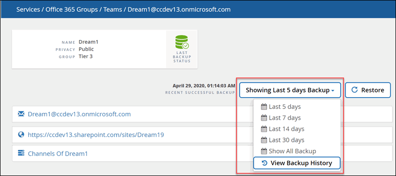

请求文档变更
请求文档变更 在 GitHub 上编辑
在 GitHub 上编辑 提供者指南
提供者指南新增功能和更新

此版本的 NetApp SaaS Backup for Microsoft 365 增加了以下新功能和更新。
2021年11月
Microsoft 365 将于 2021 年 10 月弃用 Exchange Online 中的基本身份验证。有关详细信息，请参见 "基本身份验证和 Exchange Online — 2021 年 9 月更新"。弃用后， Microsoft 365 组以及共享邮箱和归档邮箱可能会发生发现失败。您可以随时启用现代身份验证，以避免出现这些故障。
如果您是新客户，则在注册时将启用现代身份验证。无需执行任何操作。
如果您是现有客户且尚未启用现代身份验证，则需要采取措施。请参见 "启用现代身份验证"。
2020年12月
如果您在美国部署 Microsoft Azure ，则您的数据不会离开 Microsoft 环境。在 SaaS Backup for Microsoft 365 的注册过程中，您可以使用 Azure Blob 存储或您自己的存储。
2020年11月
-
从本月开始，您可以监控所有服务的用户数据。借助此新功能，您可以下载 Excel 文件来监控多种用户数据类型，例如电子邮件或 URL 地址，邮箱类型，许可证使用，发现状态，上次发现， 备份状态，备份层等。
-
现在，您可以将 Microsoft Office 365 组还原到另一个组。
-
OneDrive for Business 许可证所有者可以无限制地释放许可证并清除用户。
-
现在，在作业历史记录日志中搜索时，除了作业类型，服务，开始时间和结束时间之外，您还可以按作业完成状态进行筛选。
2020 年 6 月
-
SaaS Backup for Microsoft 365 现在支持 Exchange Online 用户的高级搜索功能。启用 * 高级搜索 * 后，您可以在备份数据的最后六个月内搜索各个邮箱项，共享邮箱项和归档邮箱项。
要启用此功能，请转至 "支持" 并提交请求。
您也可以发送电子邮件给 SaaS 备份支持团队，电子邮件地址为 saasbackupsupport@netapp.com 。
2020 年 3 月 /4 月
-
现在，您可以选择不同的时间范围来浏览 Microsoft 365 Exchange ， SharePoint ， OneDrive for Business 以及受保护用户的组的备份。

-
SaaS Backup for Microsoft 365 现在支持备份到 Microsoft Teams聊天 。借助此新功能，您可以备份和还原对话，渠道，选项卡，附件，成员， 和设置。
要启用此功能，请转至 "支持" 并提交请求。
您也可以发送电子邮件给 SaaS 备份支持团队，电子邮件地址为 saasbackupsupport@netapp.com 。
2020年1月
-
现在，您可以查看已取消配置的邮箱，站点， MySite ，组或帐户。"查看已取消配置的项"
-
现在，用户许可证将在清除帐户七天后自动释放。您可以查看计划在七天内清除的项目列表以及已清除的项目列表。"查看已清除数据的列表"
-
Microsoft SharePoint Online 和 OneDrive for Business 现在支持 Microsoft OneNote 笔记本备份。"为 OneNote 启用备份"
2019 年 9 月
-
现在，您可以激活对 SaaS Backup 付费订阅的支持。激活支持后，您可以通过电话，在线聊天或 Web 服务单系统访问技术支持。
2019 年 6 月
-
SaaS Backup for Microsoft 365 现在支持备份和还原使用 Microsoft SharePoint Online 和 Microsoft OneDrive for Business 中的 " 复制到 " 功能创建的项目。
-
已进行了一些增强，以便在还原统计信息中包括更多详细信息，包括还原大小，还原位置和其他注释。
2019 年 5 月
-
SaaS Backup 现在支持附加许可证。
2019年4月
-
SaaS Backup for Microsoft 365 现在支持删除安全组。
-
共享邮箱不再使用用户许可证。
2019 年 3 月

2019年2月
-
SaaS Backup for Microsoft 365 现在支持以下功能：
-
备份和还原归档邮箱。
-
增强了 Microsoft Office Exchange Online ， SharePoint 和 OneDrive for Business 中的备份和还原统计信息。
-
已归档
单击 "此处" 新功能的归档列表